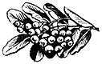

Рябина

Характеристика породы
Рябина относится к роду Sorbus, подсемейству Romaceae, семейству Rosaсеае. Она представляет собой дерево или кустарник с перистосложными листьями и крупными щитками цветков. Плоды — красные, жёлтые или чёрные ягоды, созревающие в сентябре—октябре.
В диком виде рябина растёт почти по всей Европе, Северной и Средней Азии. На севере в горах доходит почти до пределов древесной растительности.
Из группы плодовых растений рябина — самое зимостойкое дерево. В этом заключается её огромная ценность для северных районов, где другие плодовые породы не могут произрастать в открытой форме.
Имеется около 80 видов рябины. В СССР наиболее распространены следующие виды рябины.
Рябина обыкновенная (Sorbus aucuparia L.)
Распространена, главным образом, в центральной и северных полосах СССР, характеризуется высокой зимостойкостью и сравнительно низкой засухоустойчивостью. Рябина обыкновенная является родоначальной формой ряда культурных сортов со сладкими плодами (сорта Невежинской рябины и др.).
Садовая крупноплодная рябина (Sorbus domestica L.)
Произрастает на юге, главным образом, в Крыму и на Кавказе.
Отличается высокой засухоустойчивостью, представляет ценный исходный материал для селекции крупноплодных форм рябины.
Моравская сладкая (Sorbus moravica)
Распространена в южных районах.
Рис. 210. Моравская сладкая.
Рябина заслуживает большего внимания, как плодовое дерево, чем она в действительности имеет. Плоды её имеют разнообразное применение.
Они употребляются в свежем виде (сладкие рябины), идут на приготовление варенья, пастилы, повидла, компотов, морса, кваса, сиропов и др.
Исключительное значение имеет рябина для приготовления наливок.
В ягодах рябины содержится много противоцинготного витамина С. По витаминозности они приближаются к чёрной смородине, лимону, еловой хвое и щавелю.
Урожайность рябины достигает 60 кг, а на юге — 90 кг с дерева. Древесина отличается необычайной твёрдостью и прочностью, представляя ценнейший поделочный материал для деревообделочной промышленности. Кроме того, рябина представляет собой ценное декоративное дерево.
Размножается отводками, порослью и прививкой.
Особенную ценность для производства представляют сладкие рябины. К ним относится широко культивируемая в Ивановской и смежных с ней областях Невежинская рябина, получившая своё название от с. Невежино, Небыловского района, Ивановской области, которое считается родиной этой рябины. Наиболее распространёнными сортами Невежинской рябины являются Кубовая и Жёлтая.
Огромное значение для культуры рябины имеют селекционные работы И. В. Мичурина, который вывел ряд ценнейших сортов её (Ликёрная, Десертная, Гранатная, Бурка и др.). До Мичурина никто не занимался улучшением сортов рябины.
В настоящее время сорта рябины (Невежинская, Десертная, Ликёрная и Гранатная) введены в стандартный сортимент почти во всех областях средней и северной полос европейской части РСФСР.